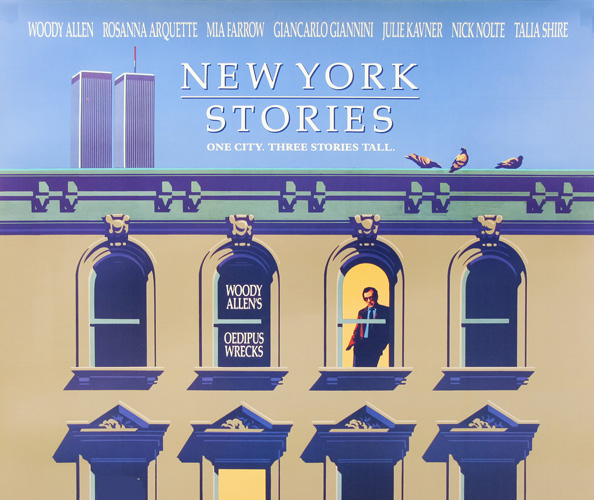
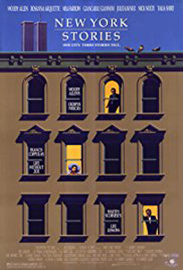
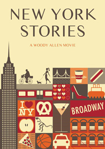
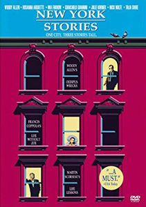

New York lawyer Sheldon (Woody Allen) has problems with his overly critical mother (Mae Questel). Sheldon complains constantly to his therapist about her, wishing aloud that she would just disappear. Sheldon takes his shiksa fiancé, Lisa (Mia Farrow), to meet his mother, who immediately embarrasses him.
The three, as well as Lisa's children from a previous marriage, go to a magic show. His mother is invited on stage to be a part of the magician's act. She is put inside a box that has swords stuck through it and she disappears, just as she is supposed to, but then she never reappears. Although he is furious at first, this development turns out to be great for Sheldon because, with her out of his life, he can finally relax. But soon, to his horror, his mother reappears in the sky over New York City. She begins to annoy Sheldon and Lisa (with the whole city now watching) by constantly talking to strangers about his most embarrassing moments.
This puts a strain on his relationship with Lisa, who leaves him. Sheldon is persuaded by his psychiatrist to see a psychic, Treva (Julie Kavner), to try to get his mother back to reality. Treva's experiments fail, but Sheldon falls for her, possibly finding her to be very similar to his mother. When he introduces Treva to his mother, she finally approves and comes back to Earth.
An anthology film; it consists of three shorts with the central theme being New York City. The first is Life Lessons, directed by Martin Scorsese, written by Richard Price and starring Nick Nolte. The second is Life Without Zoë, directed by Francis Ford Coppola and written by Coppola with his daughter, Sofia Coppola.
The final section is Oedipus Wrecks, directed, written by and starring Woody Allen. His section features both Mae Questel and Julie Kavner, who voiced perhaps the most significant female cartoon characters of the 20th century (Betty Boop and Marge Simpson), although generations apart.
"You got a nice place here. What time does the cobra come out?"
"Boiled chicken. That's my mother's specialty. Of course she manages to render the bird completely devoid of any flavour. It's a culinary miracle."
"Only Woody Allen seems to have understood what is possible in a featurette." - Geoff Andrew : Time Out


